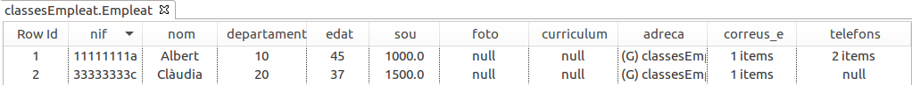
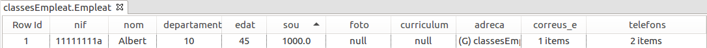

3.2 - Funcionalitat bàsica
Treballarem sobre un exemple anterior, el dels empleats, però incorporant més dades, com els telèfons, els correus electrònics, etc, per veure que podem guardar una classe un poc més complicada en la BD Orientada a Objectes.
En un projecte nou, anomenat Tema6, anem a incorporar el driver de DB4O
db4o-8.0.249.16098-all-java5.jar
Per organitzar-lo millor creem un paquet anomenat classesEmpleat , que ens servirà per a fer tots els exemples. Ens crearem la classe Empleat, i les classes Adreca i Telefon que utilitzarà aquella. Construïm les classes de la manera més còmoda. Això sí, a Empleat li afegirem dos constructors per a fer més còmoda la introducció d'Empleats amb poques dades, ja veurem per què.
class Adreca (var carrer: String?, var codipostal: String?, var poblacio: String?)class Telefon( var mobil : Boolean , var numero: String)Ara ja va Empleat:
class Empleat (
var nif: String? , var nom: String? , var departament: Int? , var edat: Int? = 0 , var sou: Double? = 0.0 ,
var foto: Array<Byte>? ,
var curriculum: Array<Char>? ,
var adreca: Adreca? ,
var correus_e: Array<String>? ,
var telefons : Array<Telefon>?
) {
constructor() : this(null,null,null,null,null,null,null,null,null,null)
constructor(nif: String) : this(nif,null,null,null,null,null,null,null,null,null)
}Com comentàvem anteriorment, hi ha una versió servidor, però que nosaltres ens conformarem amb la versió integrada (embedded). En el cas de la versió servidor utilitzaríem la classe Db4o per a fer la connexió. Com que nosaltres farem servir la versió integrada, utilitzarem la classe Db4oEmbedded.
Connexió
És tan senzill com cridar des de la classe Db4oEmbedded el mètode estàtic openFile() passant-li com a paràmetre el nom del fitxer. A partir d’aquest moment, es mantindrà oberta una transacció que continuarà activa fins que tanquem amb el mètode close().
val bd = Db4oEmbedded.openFile("Empleats.db4o")Inserció
Per a guardar un objecte utilitzem el mètode store(objecte)
Provem a introduir un empleat. Guardeu el següent programa en Exemple1_InserirEmpleat.kt. Guardeu-lo en el paquet exemples
import com.db4o.Db4oEmbedded
import classesEmpleat.Empleat
import classesEmpleat.Adreca
import classesEmpleat.Telefon
fun main() {
val bd = Db4oEmbedded.openFile("Empleats.db4o")
var e = Empleat("11111111a","Albert",10,45,1000.0,null,null,null,null,null)
// les dades més complicades les introduïm de forma especial
e.adreca = Adreca("C/ Major, 7", "12001", "Castelló")
e.correus_e = arrayOf("alu11111111a@ieselcaminas.org")
e.telefons = arrayOf(Telefon(true, "666777888"), Telefon(false, "964112233"))
bd.store(e);
bd.close();
}Sí que ha guardat l'objecte. Mirem-lo des de la finestra de DB4O:

On hem obert la BD apretant el botó Open (de vegades no mostra les dades dient que This view is not available until indexes are built . Ho podem solucionar reiniciant IntelliJ i així obligant a reconstruir els índex). I hem apretat el botó Get Objects tenint seleccionada la classe Empleats.
En finalitzar d'observar les dades des de la finestra DB4O és convenient tancar la connexió. Si no la tanquem, quan anem a executar qualsevol programa que accedisca, ens donarà error, avisant que la Base de Dades està bloquejada (com.db4o.ext.DatabaseFileLockedException).
Per tant, haurem de tenir especial atenció a tancar la connexió a la Base de Dades. Podria passar que ens donara un error el programa, i la connexió s'haja quedat oberta. Segurament el més oportú serà intentar tancar el programa, o tancar IntelliJ, i d'aquesta manera desbloquejarem la Base de Dades.
El mètode commit obliga a guardar les dades cap al contenidor i activa de nou una transacció per a les properes operacions, per tant és convenient anar utilitzant-lo després d'una sèrie d'actualitzacions.
Anem a posar algunes dades més, per a tenir un poc més de joc. Concretament seran dues empleades més. Copieu el següent codi al fitxer Exemple1_1_InserirMesEmpleats.kt
import classesEmpleat.Adreca
import classesEmpleat.Empleat
import classesEmpleat.Telefon
import com.db4o.Db4oEmbedded
fun main() {
val bd = Db4oEmbedded.openFile ("Empleats.db4o")
val e = Empleat("22222222b", "Berta", 10, 35, 1700.0, null, null, null, null, null)
val f = Empleat("33333333c", "Clàudia", 20, 37, 1500.0, null, null, null, null, null)
//les dades més complicades les introduïm de forma especial
e.adreca = Adreca ("C/ Enmig, 7", "12001", "Castelló")
val corr = arrayOf( "alu22222222b@ieselcaminas.org", "berta@gmail.com" )
e.correus_e = corr
val tels = arrayOf(Telefon(true,"666555444"), Telefon(false,"964223344"))
e.telefons = tels
f.adreca = Adreca ("C/ de Dalt, 7", null, "Borriana")
val corr2 = arrayOf("alu33333333c@ieselcaminas.org")
f.correus_e = corr2
bd.store(e)
bd.store(f)
bd.close()
}Consulta bàsica
En la següent pregunta, veurem les maneres de fer una consulta, però ara anem a veure la forma més senzilla, que és la realitzada a través del mètode anomenat queryByExample. Aquest mètode rep per paràmetre un objecte del tipus a cercar, que farà d’exemple o patró per trobar totes aquelles instàncies emmagatzemades coincidents amb les dades del patró. El patró que es passe per paràmetre no haurà de tenir totes les dades complimentades, sinó només aquelles de les quals se’n desitge la coincidència. Així, per exemple, si passem un objecte d'Empleat amb un únic atribut introduït (el nif), queryByExample retornarà totes aquelles instàncies que tinguen per nif el valor entrat. Per aquesta raó volíem un constructor amb només el nif, per a poder buscar l'empleat amb aquest nif amb queryByExample(). El retorn es fa en un objecte de tipus ObjectSet, una classe que implementa la interfície List de Java i també la interfície Iterable, de manera que siga possible recórrer el contingut utilitzant els mètodes next i hasNext. També podem utilitzar el bucle for (el del foreach).
En el següent exemple es veu com una vegada obtingut l'objecte, es pot accedir molt fàcilment a tota la informació. Copieu-lo al fitxer Kotlin Exemple2_ConsultaUnEmpleat.kt
import com.db4o.Db4oEmbedded
import com.db4o.ObjectSet
import classesEmpleat.Empleat
fun main() {
val bd = Db4oEmbedded.openFile("Empleats.db4o")
val patro = Empleat("11111111a")
val llista = bd.queryByExample<Empleat>(patro)
if (llista.hasNext()) {
val e = llista.next() as Empleat
println(
"Nif: " + e.nif + ". Nom: " + e.nom + ". Població: " + e.adreca?.poblacio
)
if (e.correus_e != null)
print("Primer correu: " + e.correus_e?.get(0) + ".")
if (e.telefons != null)
print("Primer telèfon: " + e.telefons!![0].numero + ".")
println()
}
bd.close();
}Observeu com no hem utilitzat un bucle per a recórrer la llista, sinó un if. Això és perquè en aquest cas concret sabem a priori que en cas de trobar alguna instància, només serà una. Aquest seria el resultat:
Nif: 11111111a. Nom: Albert. Població: Castelló
Primer correu: alu11111111a@ieselcaminas.org. Primer telèfon: 666777888.
Esborrat
Per a poder fer una actualització o esborrat d'algun objecte de la Base de Dades, aquest s'ha de correspondre amb algun objecte del programa Java o Kotlin, és a dir, l'objecte ha de ser persistent. Aquesta correspondència pot ser perquè un objecte nou l'hem guardat amb store() (i continua "viu"), o perquè l'hem llegit de la BD (millor dit, hem llegit una llista i després hem fet l'assignació a un objecte).
L’eliminació dels objectes s’aconsegueix amb el mètode delete. Per defecte, DB4O elimina només l'objecte que es passa com a paràmetre, però no els objectes que aquest puga contenir. Si un objecte conté un altre objecte, com succeeix amb les instàncies Empleat i Adreca i Telefon, això pot convertir-se en un gran problema, ja que són objectes que normalment no es manipularan per separat i, en cas que no s’esborren amb el seu propietari, continuaran indefinidament en la Base de Dades. Per evitar-lo hauríem de configurar per a que esborre en cascada.
Mirem un exemple en el qual esborrem un empleat. En el comentari teniu el moment en que encara no es corresponen, i per tant no es pot esborrar. Recordeu que després d'aquest exemple, quedarà inconsistent la informació. Si no voleu fer-lo, poder saltar-vos-el. De tota manera, si el feu i queda inconsistent la informació sempre podem esborrar la Base de Dades i tornar a executar Exemple1_InserirEmpleat.kt i Exemple1_1_InserirMesEmpleats.kt. Si teniu ganes de fer-lo, guardeu-lo en el fitxer Exemple3_EsborratDefectuos.kt
import com.db4o.Db4oEmbedded
import com.db4o.ObjectContainer
import com.db4o.ObjectSet
import classesEmpleat.Empleat
fun main() {
val bd = Db4oEmbedded.openFile ("Empleats.db4o")
val patro = Empleat("22222222b")
// Si posàrem ací db.delete(patro) no tindría efecte, perquè e no es
// correspon amb cap instància de la BD
val llista = bd.queryByExample<Empleat>(patro)
if (llista.hasNext()) {
val e = llista.next()
bd.delete(e)
}
bd.close()
}Com que no hem esborrat en cascada, si després mirem des de la perspectiva OME, comprovarem que encara existeixen els objectes adreça i telèfon, i que ara no correspondran a cap empleat. Hauríem d'aprofitar el moment per a esborrar des de la perspectiva OME les instàncies de Adreca i Telefon que corresponien a l'empleat que hem esborrat, per deixar-lo consistent. En les següents imatges es mostra aquest fet:

Ja no existeix l'objete Empleat corresponent a Berta, però:
 |
encara existeix la seua adreça (C/Enmig, 7 de Castelló) i els seua telèfons (666555444 i 964223344)
Per a poder esborrar en cascada, en el moment d’obrir el fitxer contenidor haurem d'especificar-lo posant-li una configuració com veurem a continuació. No és possible modificar la configuració de forma dinàmica. A més, malauradament, la configuració no es guarda amb el fitxer contenidor, sinó que cada vegada que obrim, haurem d'especificar-li la configuració desitjada. En aquesta configuració li direm que la classe Empleat esborra en cascada, és a dir, que quan esborrem un objecte, els objectes "subordinats" (de les classes Adreca i Telefon) també s'esborraran. Copieu el segúent codi en un fitxer anomenat Exemple4_EsborratCorrecte.kt:
import com.db4o.Db4oEmbedded
import com.db4o.ObjectContainer
import com.db4o.ObjectSet
import classesEmpleat.Empleat
fun main() {
val conf = Db4oEmbedded.newConfiguration()
conf.common().objectClass("classesEmpleat.Empleat").cascadeOnDelete(true)
val bd = Db4oEmbedded.openFile(conf,"Empleats.db4o")
val patro = Empleat("33333333c")
// Si posàrem ací db.delete(patro) no tindría efecte, perquè e no es
// correspon amb cap instància de la BD
val llista = bd.queryByExample<Empleat>(patro)
if (llista.hasNext()) {
val e = llista.next()
bd.delete(e)
}
bd.close()
}En les següents imatges es mostra com ara sí que ha esborrat en cascada:

Hem esborrat a Clàudia
 |
I també ha desaparegut la seua adreça (C/ de Dalt de Borriana). Com que no tenia telèfons, continuen els mateixos d'abans
Modificació
Per a modificar un objecte de la Base de Dades primer haurem de tenir un objecte de Java que es corresponga amb ell (igual que en l'esborrat). Després de modificar-lo, només l'haurem de guardar amb store(). Hem de parar atenció a que si el que volem modificar és d'una subclasse, haurem de modificar en cascada, sinó no tindrà efecte. Ho farem indicant cascadeOnUpdate(true) a la configuració amb què obrirem el fitxer. Copieu el següent codi en un fitxer Kotlin anomenat Exemple5_ModificarCascada.kt :
import com.db4o.Db4oEmbedded
import com.db4o.ObjectContainer
import com.db4o.ObjectSet
import com.db4o.config.EmbeddedConfiguration
import classesEmpleat.Adreca
import classesEmpleat.Empleat
fun main() {
val conf = Db4oEmbedded.newConfiguration()
conf.common().objectClass("classesEmpleat.Empleat").cascadeOnUpdate(true)
val bd = Db4oEmbedded.openFile(conf, "Empleats.db4o")
val patro = Empleat("11111111a")
val llista = bd.queryByExample<Empleat>(patro)
if (llista.hasNext()) {
var e = llista.next()
if (e.sou != null) {
e.sou = e.sou.toString().toDouble() + 200.0
}
val adr = e.adreca
adr?.carrer = "Pl. Rei en Jaume, 15"
adr?.codipostal = "12002"
e.adreca = adr
bd.store(e)
}
bd.close()
}En la imatge es veu que en fer l'actualització en cascada sí que s'han guardat els canvis, i la primera adreça (que és la corresponent a Albert) s'ha modificat.
La restricció que hem comentat abans de que hem de tenir un objecte de Java que es corresponga amb ell (que ocupa els casos d'esborrat i modificació), l'hem de tenir molt present. I hem d'anar amb compte, perquè quan es tanca la BD es perd tota correspondència.
El següent exemple és idèntic a l'anterior, però es tanca i es torna a obrir la BD després d'haver assignat a e l'objecte, i abans de guardar-lo; per tant L'OBJECTE ESTÀ SEPARAT (ja no està associat a un objecte de la Base de Dades). En principi el que voldríem és modificar les dades de l'empleat existent, però en realitat ham introduït un nou empleat (amb el mateix nif, nom, ...), i per tant molt perillós perquè estam duplicant la informació. Observeu que, com que només es vol modificar el sou, no cal actualitzar en cascada. Si voleu provar l'exemple, gaurdeu el següent codi en el fitxer Kotlin Exemple6_ModificacióIncorrecta.kt. I recordeu que la Base de Dades haurà quedat malament, i per tant el millor seia esborrar-la i tornar a executar els exemples Exemple1_InserirEmpleat.kt i Exemple1_1_InserirMesEmpleats.kt
import com.db4o.Db4oEmbedded
import com.db4o.ObjectContainer
import com.db4o.ObjectSet
import classesEmpleat.Empleat
fun main() {
var bd = Db4oEmbedded.openFile ("Empleats.db4o")
val patro = Empleat("11111111a")
val llista = bd.queryByExample<Empleat>(patro)
if (llista.hasNext()) {
var e = llista.next()
if (e.sou != null) {
e.sou = e.sou.toString().toDouble() + 200.0
}
bd.close() // Tanquem i tornem a obrir la BD, per veure que hem
// perdut la correspondència de e amb l'objecte de la BD
bd = Db4oEmbedded.openFile("Empleats.db4o")
bd.store(e)
}
bd.close()
}Ara el contingut de la Base de Dades és aquest:

On es veu que hem creat un nou objecte, en compte de modificar el que ja existia. I el mateix amb l'adreça i els telèfons
 |
 |
En cas que tanquem la BD i vulguem modificar o esborrar un objecte haurem de tornar a connectar amb ell.
I en el cas de la inserció, abans d'inserir, podríem comprovar que no existeix (per exemple que no existeix cap empleat amb aquest nif).
Llicenciat sota la Llicència Creative Commons Reconeixement NoComercial CompartirIgual 2.5